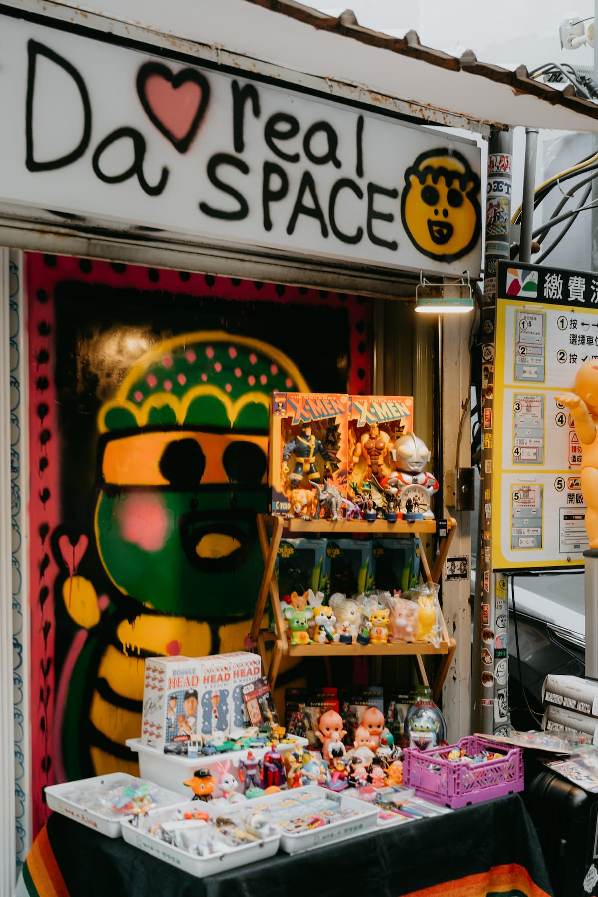

大腸寶寶，台北最神秘的都市傳說之一。有的分身層層疊滿整面牆，有的隱匿在變電箱或小吃店旁的巷口，這是什麼神秘燒賣？PTT 有沒有大腸王的卦？426 又是什麼密碼？
今次我們來到大腸寶寶大本營兼工作室「大真空藝術」，訪問寶寶們的真身「大腸王」。只見大腸王悠哉地穿著忍腸龜寶 Tee 與夾腳拖，緩緩走出來迎接我們，搬了兩張板凳，就這麼在隔壁的停車場聊了起來。
他 15 歲赴美留學時，不斷遭同學問話：「會不會功夫」、「你長得怎麼那麼像李連杰」……致使這藝術學院畢業後 25 歲返台的年輕小子，急欲思索何謂台灣藝術之草根性，什麼能代表台灣。幾經多年挖掘自己熱愛的嘻哈音樂、美國次文化與台灣的童年記憶後，悟出的結果竟是大腸？
遍佈全台的大腸寶寶不僅在網路引發捕捉潮；甚至被台北市議員拿來質詢市長柯文哲，被媒體以「大腸王之亂」報導；可他卻又是北市府力邀的台北燈節嘉賓。活躍的腸寶終將征服宇宙？聽聽大腸王的說法。
請非官方地自我介紹， 你希望在 google 出現什麼大家不知道的訊息？
「就是…… 台灣塗鴉藝術家大腸王…..」
「大家認識我是因為常看到大腸寶寶，但其實我創作經歷已經超過十年，這十幾年來都是（畫風）轉變的過程。最一開始是非常細緻、很講求技術，後來又有一段時期很混亂，再來又變可愛，才漸漸有大腸寶寶的雛形。」
在新聞上，你是議員口中的 「塗鴉怪客」、北市環保局長 口中「來燈節參展的先生」， 有沒有你目前為止看過最滿意的代稱？
「還是最喜歡大腸王啦。」 「之所以叫大腸王，是因為很多藝術家都號稱自己有精神病，像草間彌生有幻覺要住進精神病院，如果藝術家非得要有病，那我也來定義自己是：腸躁症藝術家（是真的有）。」
「這其實有點諷刺的意味， 誰說有精神病才是好藝術家？ 曾幾何時病態被認為是一件很藝術的事？」
作為台北都市傳說，能否透露大腸寶寶的基本資料？
「其實我塗鴉受嘻哈音樂的影響很深，很多嘻哈歌手會把自己小時候的照片當作唱片封面，我就想乾脆把我一歲的照片畫成卡通版塗鴉，最好佈滿整個台北市。」
「所以大腸寶寶的本體，就是一歲的我（大腸王）。」
大腸寶寶的誕生演化史？
「我早期的創作偏恐怖，一顆頭擠滿喜怒哀樂四張臉，一堆腸子像腦漿爆出來一樣，糾結在一起。但這風格太極端畫法又太複雜了，在街頭畫一小時都畫不完，後來簡化到只留下腸子 QQ 的線條，再結合我小時候那張臉，才成為現在的大腸寶寶。」
畫風簡化如何反映你的心理轉變？
「以前我有藝術家脾氣太久了，30 歲前都非常憤世忌俗，所以畫的東西也就很 sick，像斷手斷腳、砍頭、噴腦漿啊。當時對自己的作品沒有信心，也不斷質疑說為什麼沒有人要用我的東西，然後我就越想越火大（笑）。」
「不過長期『用憤怒創作』其實是種心理消耗， 要是有天你爆掉了， 就什麼都沒有了欸。」 「久了你會發現沒什麼好怒的啦，在台灣，我們的環境不至於讓人累積這麼極端的憤怒。」
你說過去創作的原始情緒是憤怒，那現在呢？
「「因為以前已經把自己逼到傷痕累累了，現在就只能畫一些療癒的啊（笑）。」 「每個藝術家都在不斷尋求一個平衡點，對我來說，調配到醜中帶可愛、可愛中帶醜，就是 Kimokawaii 的奧秘。」 「多數日本遊客看到大腸寶寶的評價就是 Kimokawaii，看起來好噁喔，怎麼那麼醜啊？但好像看久又有點可愛！我蠻喜歡這種反應的。」
如果大腸寶寶會說話，他的口頭禪可能是什麼？
「你想像他就是個一歲小孩，完全的空白、純真，一條線就能勾勒出他的樣貌，這就是他的全部。」 「當你經歷很多複雜的事後，會發現簡單有時是最有力量的。他像是一直提醒著我：返璞歸真。」
為什麼大腸寶寶會加上 hashtag #台灣土產？
「我覺得大腸是某種 #台灣土產。十年前我從美國回來，我在思考台灣之於世界有什麼代表性的產物，有想到台灣半導體代工很強，但我不可能畫什麼 laptop 寶寶還是晶圓寶寶吧？我沒興趣，所以還是從食物下手。」 「我希望未來大腸寶寶也可能成為代表台北、台灣的塗鴉標記。」
大腸寶寶確實有被國外看到， 像日媒、國外滑板選手 都有曝光你的塗鴉。
「算有朝著目標前進中。最近也有被日本的 Zine（獨立出版物）報導，之前還有日本媒體寫我是台灣 Banksy，我是覺得太誇張了啦……」
柯文哲看到大腸寶寶笑說： 「這畫得也不是很好看」， 對你來說「好看」與否重要嗎？
「其實他講的沒錯啊，就真的不好看，我也沒想過要畫得『好看』。要畫大眾所謂的漂亮，我當然是做得出來，但我覺得要畫醜，其實更難，尤其那個『醜』要從藝術家身上『長出來』，要有你的感覺。」
「舉例來說，畫『漂亮』的畫作，就像我今天穿一套西裝搭配很貴的皮鞋來受訪，你可能會對我有完全不同的印象，但那個印象不是我，只是我刻意捏造出的『漂亮』；畫大腸寶寶就像我穿著拖鞋，很軟爛、癱在那什麼都不做的樣子，這就是最真實的我。」
你是藝術學院出身， 為何最後選擇塗鴉、街頭 作為你的創作方式？
「因為街頭塗鴉夠 low 啊，誰都可以欣賞。」
「塗鴉是最平易近人、最純粹的藝術，塗鴉藝術家就圖一個自嗨、好玩，沒想過賣錢、看的人喜不喜歡這些問題。」 「在台灣，再知名的藝術家在藝廊開個展，一個月有一千個人來看就很了不起了，可是你在街頭塗鴉，一天可能就有一萬個人看到。大腸寶寶現在連小朋友都認得。」
在台灣街頭這麼多年，有什麼你認為足以被稱為 #台灣土產？
「有人會去拍花蓮有個很醜的盜版米老鼠，覺得它醜死了，好可恥喔，畫那麼爛，可是它卻變成花蓮很有名的一個景，這些醜東西就是台灣的一部分啊！」
「那藝術家要想的是，怎麼把這些『醜』包裝得更有趣、讓大家更喜歡，而不是整天在那邊罵罵罵，這麼會罵就證明你可以做到世界最好嘛。我蠻喜歡挪用一些舊玩具、卡通圖案，因為小時候台灣很多代工、加工廠，也有不少盜版玩具，這是台灣無法抹去的歷史記憶。」
「比起隱瞞盜版王國這段歷史，還不如大方的承認它，再融合我們新的原創精神，改良它，這才是真正的台灣土產。」

最後，大腸王這名字，實際隱含 你認為藝術跟大腸一樣， 內裡本是一坨屎的想法， 到現在依舊視藝術為糞土嗎？
「我只是覺得，大家不需要將藝術視為高高在上、遙不可及的事物。它就是一幅畫、一個雕塑，很多偉大的想像其實都是人自己腦補出來的，包括藝術品的價格也是，能不能進美術館也是，都是人定義出來的。」
「所以你就乾脆把它（藝術）看成一坨屎嘛，大家覺得噁心、沒有價值的東西，你只要去破壞它、踩爛它，再把它塑造成新東西，或許就成為別人眼中的藝術品了？藝術本就沒有高低之分，只要有好的新的創意、原創性和想像力，就是好的藝術品。」
「端看你選擇，接受真實的醜陋還是虛偽的美麗，美醜只有一線之間。」

Special Thanks/ 大腸王, 大真空藝術 Photography/ Aru Chou